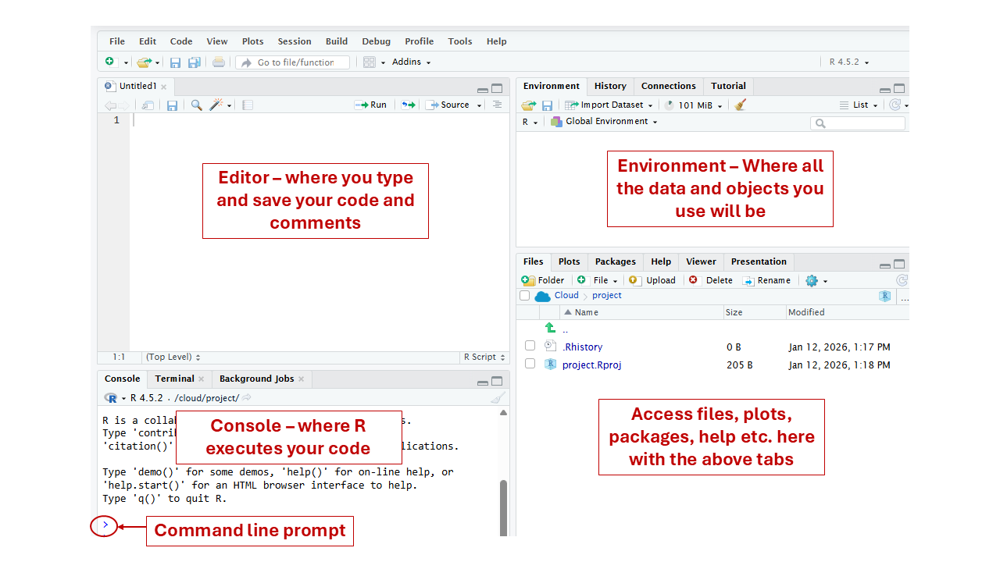

Welcome to R
R is a programming language built for working with data. You have spent this semester organising observations into tidy tables — one row per observation, one column per variable, units in the header, categories spelled the same way every time. This module is where you find out what those rules were for.
R cannot look at a spreadsheet and work out what you meant. It reads the structure literally. A tidy table imports in one line and is immediately usable. An untidy one imports as something that looks almost right and then gives you wrong answers without complaining. The rules were never about neatness.
In this module you will meet RStudio, write your first R code, and explore a dataset you already know — goldenrod stems, galled and ungalled, measured in the field.
By the end of this module, you should be able to:
- Identify the four main panes in RStudio
- Explain the difference between the Source pane and Console
- Assign a value to an object using
<- - Identify numeric, character, and logical data types
- Use
head(),str(), andsummary()to explore a dataframe - Access a single column using
$
This is a public demonstration. Nothing you type here is recorded, and this copy is not connected to any course. Work through it at whatever pace you like, and use Next Topic to skip past anything you would rather not attempt.
This is one of ten modules in BisonExplorR, an R package written for the introductory biology laboratory sequence at Bucknell University. The other nine cover data wrangling, visualisation, and the statistical tests students meet across the two-course sequence. To install the full package:
remotes::install_github("aso003-bucknell/BisonExplorR")The RStudio Interface
When you open RStudio, you will see four panes:
Source — where you write and save R scripts
Console — where R runs your code and prints output
Environment — where you see objects you have created
Files / Plots / Packages / Help / Viewer — where you browse files, view plots, manage packages, and access help

You will type most of your code in the Source pane and run it line by line. In this tutorial, the code boxes work in a similar way: write your code, click Run Code to test it, and click Submit Answer to check it.
Check your understanding
Objects and Assignment
In R, you store values using the assignment operator
<-. The result is called an object.
quadrat_name <- "Old field, quadrat 3"
quadrat_name## [1] "Old field, quadrat 3"The object quadrat_name now stores the value
"Old field, quadrat 3". You can also see it appear in the
Environment pane.
Your turn
In the field you sampled goldenrod in neighbour-matched pairs — each galled stem recorded alongside an ungalled stem growing beside it. The practice dataset holds 15 such pairs.
Create an object called num_pairs and assign it the
value 15.
# Create your object belowData Types in R
R recognizes several types of data. Three common types are:
| Type | Description | Example |
|---|---|---|
numeric |
Numbers, including measurements and counts | 8.5, 12 |
character |
Text, usually written in quotes | "galled", "P7U" |
logical |
TRUE or FALSE values | TRUE, FALSE |
You can check what type an object is using class().
Type matters more than it sounds like it should. If one stem width
was typed as 8.5 mm instead of 8.5, R reads
that whole column as character, and every mean you calculate from it
fails. This is the reason units belong in the header and never in the
cell.
Try it: class()
Run the code below to see the class of each example.
class(3.14)
class("hello")
class(TRUE)Check your understanding
Working with a Dataframe
A dataframe is R’s version of a spreadsheet. It has rows and columns.
In this tutorial, a goldenrod dataset is already loaded for you as an
object called goldenrod. It holds 15 neighbour-matched
pairs — 30 stems in total — with stem width, gall diameter, and a count
of inflorescence shoots for each stem.
This is a long, tidy table: one row per stem, one column per variable. It is the shape your own field sheet was designed to produce.
Confirm the data loaded
Run the line below. You should see "data.frame", which
means goldenrod is stored as a dataframe.
class(goldenrod)Exploring a Dataframe
Once you have a dataframe, the first thing to do is look at it. Three functions are especially useful.
head() - see the first six rows
# Use head() on the goldenrod datasetstr() - see the structure
str() shows the variable names, data types, and a
preview of the values.
# Use str() on the goldenrod datasetsummary() - see summary information
# Use summary() on the goldenrod datasetWhat summary() just told you about missing data
Look again at the gall_diameter_mm column in your
summary() output. Underneath the quartiles there is a line
reading NA's : 15.
That is not an error. Fifteen of the thirty stems are ungalled, and
an ungalled stem has no gall to measure. Those cells were left
blank in the source file, and R read a blank cell as
NA — “not available.”
This is the reason for the rule you followed in lab: a blank cell
means not measured, and a 0 means measured,
and the answer was none. If someone had typed 0 into
those fifteen cells instead, R would have happily averaged them in and
reported a mean gall diameter roughly half its true value — with no
warning of any kind.
Reading str() Output
str() is one of the most useful functions you will use.
Let’s practice reading its output.
Run str(goldenrod)
Run str(goldenrod) once more, then answer the questions
that follow.
str(goldenrod)Data Structure Quiz
Accessing Individual Variables
You can pull out a single column from a dataframe using the
$ operator.
The $ operator
Run the line below to pull out the gall_status
column.
goldenrod$gall_statusEvery value in that column is either galled or
ungalled, spelled and capitalised the same way every time.
If a few rows read Galled or un-galled, R
would treat them as additional, separate groups — and a comparison of
two groups would quietly become a comparison of four.
Your turn
Use $ to access the stem_width_mm
column.
# Access the stem_width_mm column from the goldenrod dataThe Coach reads your submitted code, not whatever is currently in the box — click Submit Answer first, then ask. It will not hand you the answer; it is built to ask you the next useful question instead.
Module 1 Complete
You have covered:
- ✅ Navigating the RStudio interface
- ✅ Understanding the Source pane, Console, Environment, and Files / Plots / Help pane
- ✅ Creating objects with
<- - ✅ Identifying basic data types
- ✅ Exploring a dataframe with
head(),str(), andsummary() - ✅ Reading basic
str()output - ✅ Accessing columns with
$
Everything you just did worked in one line because the table was tidy before it reached R. That is the whole point of the rules.
Module 2 will show you how to set up your own Posit Cloud project and import a data file — including, eventually, your own.